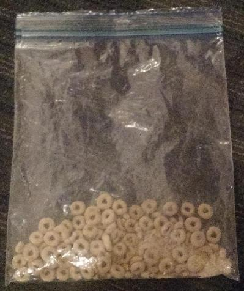

We started this hackathon with no real idea for a project, and the intention to build something random and have fun. Then the pieces started coming together. The conversation went something like:
"What should we build?"
"I dunno, what's something that's annoying every day?"
"When people try to talk to me."
"We could make a device that calls your phone so you can get out of a conversation!"
The idea developed from there, being broadened to a general purpose bluetooth alert system. We even added a chatbot you can talk to on the phone!
Button + Wire + Bluetooth Module + Arduino + Battery = Redtooth Necklace
Redtooth is a red alert system using bluetooth technology to communicate from a secret button to an app on your phone without anyone noticing. The button is located at the back of the neck, so that an anxious user can pretend they are scratching their neck when triggering the alert. The necklace consumes no power when the button is not pressed, which allows for indefinite battery life.
Once the signal reaches the app, a variety of actions can be taken. A simple sound file can be played to simulate a phone call to the wearer. A secret text can be sent to a pre-assigned recipient. A speech to text engine can be launched to initiate communication with a custom chatbot. Some future plans include broadcasting your location, calling 911, or even ordering a pizza!
CARL (Chatbot with Automatic and Rapid Learning) was developed alongside the device and app to simulate someone talking to you with speech-to-text and text-to-speech.
This little hacker made the bluetooth.
This little hacker made the UI.
This little hacker made the necklace.
This little hacker is a talkative guy.
The team members were so busy coding, they decided to wait for the line for meals to "die down." Instead, the food died down and they were left with the last tuna half-sandwich. Fortunately, backup Cheerios:
